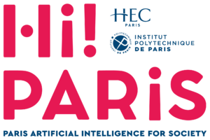

ML Research Engineer
Sep 2025 – PresentDoctolib
Audio and speech ML for healthcare products used by millions of patients and practitioners.
Nardi Xhepi
ML Research Engineer at Doctolib, working on audio ML for healthcare. Double M.S. in Data Science at École Polytechnique and AI at Télécom Paris. Previously Generative AI at Dassault Systèmes and anomaly detection at EDF.

~/paris, france
Worked at
Studied at
Doctolib
Audio and speech ML for healthcare products used by millions of patients and practitioners.
Dassault Systèmes
RAG pipelines and knowledge graphs powering Generative AI features for ENOVIA.
Électricité de France (EDF)
Ensemble anomaly detection — +15% AUC-PR, potentially preventing €60M in annual losses.
BendingSpoons First Ascent · 2025

Hi!Paris Hackathon · 2024 & 2025
D4GEN Hackathon Genopole · 2025
Always happy to talk ML — research collaborations, side projects, or just a good technical debate. My inbox is open.